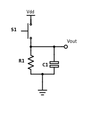

Red Light, Green Light Game

About this Project
In this project, you will be implementing a 2-Arduino game called Red Light, Green Light. In this game you are a carduino playing against a randomly generated stoplight: You must move at a green light, and stop at a red light; should you run over a red signal, or stay put at a green signal, you lose. If you get it right, you’ll gain a point and move to the next intersection.
Lecture Slides
Prerequisites
- Intro to Arduino
Skills Learned
- Pull-up/pull-down resistor
- Serial protocol: UART (Universal Asynchronous Receiver Transmitter)
Parts List
| Part | Quantity | Unit Cost | Example Vendor |
|---|---|---|---|
| Arduino Nano | 2 | $4.00 | Amazon |
| Mini USB Cable | 2 | $1.80 | Mouser |
| Breadboard | 2 | $1.50 | Amazon |
| Green LED | 1 | $0.12 | Digikey |
| Red LED | 1 | $0.14 | DigiKey |
| White LED | 1 | $0.17 | DigiKey |
| 200Ohm Resistor | 3 | $0.10 | DigiKey |
| Push Button | 2 | $0.23 | DigiKey |
| 10kOhm Resistor | 2 | $0.10 | DigiKey |
| 100nF(0.1uf) Capacitor | 2 | $0.45 | DigiKey |
Total estimated cost: $16.89 per team of 2
If reusing Arduino/MiniUSB/Breadboard: $2.29 per team of 2
Project Specification
One microcontroller (representing the stoplight) will flash one of the two red/green LEDs and the other microcontroller (representing the Car and its gas/brake pedals) will have two tactile switches (fancy word for buttons). Press the gas at green lights and the brake at red lights in order to score points and move to the next intersection. Get it wrong and you lose!
The goal of this project is to teach you how to use Serial communication and give you your first experience with communication protocols before we move on to more sophisticated and complex protocols.
Reference Material
This lab requires reading documentation and datasheets. Here are some resources that you will reference throughout the project.
{kind=link}
Checkpoint 1: Getting your MCUs(Arduinos) talking to each other via UART
This is a group project! Team up with a partner!
-
Wire up your MCUs so that we can get them talking using the Serial library. To read and write between hardware devices, use the Serial library’s read and write functions. Also, make sure that you are first checking that there is available serial data before reading from Serial. To print text to the screen of your computer use the print or println functions as we have done before. Remember that data transmitted by one MCU is data received by the other. Connect the Tx of one device to the Rx of the other device and vice versa. Make sure you also connect GND pins on both devices to each other so they share a common ground.
NOTE: DO NOT CONNECT THE TX RX PINS WHEN UPLOADING A SKETCH TO YOUR ARDUINO. Disconnect these pins when uploading code and reconnect them after the code is done uploading.
-
Write two sketches, one for each Arduino. One sketch(transmitter) should send two different characters continuously in a loop with a small delay between sending each character. The other sketch(receiving) should turn on the onboard led (pin 13) when one of the characters is received and turn off the onboard led when the other character is received. Make sure to set the same baud rate for both sketches. Use 2 computers to observe the data going over more easily.
Checkpoint 2: Wiring Up the rest of the Hardware
Arduino Device 1: Creating the green and red lights: You will need to hook up 2 different output LEDs (choose between red, yellow and/or green)** to your Stoplight Arduino. Remember, LEDs can burn out if more than 20mA of current passes through them, and usually you want to limit current to <=5mA to save energy and to prevent the LED from being too bright. Make sure to include a current-limiting resistor in series with your LEDs. The digital pins output ~5V when you write HIGH.
Arduino Device 2: Pressing on the gas or break using buttons Your Carduino will have 2 push button inputs, one representing the gas pedal and one representing your brake. If the Green Light is flashed, you’ll press on the gas button. When the Red Light is flashed, you’ll press on the brake. Grab these buttons from the OPS parts drawers. Use this pinout to help you in selecting pins for your Arduino.
NOTE: Button Debouncing.
When you press or release a button, it will “bounce” several times before reaching its final state, which means several button presses will be registered. One way to avoid this is to put a capacitor in series with the button, so that the button release will not register until after the capacitor is fully discharged over time. If the capacitor’s value has been appropriately chosen, this will be after the button has finished bouncing, such that only one press will be registered. Below is the basic circuit for button debouncing:

Vout is the voltage read by the microcontroller input pin, and Vdd is +5V. Use a 10k resistor and a 100nF capacitor for your debouncing circuit, so that you achieve an RC time constant of 1ms (time constant = resistance * capacitance).
NOTE: This debouncing circuit also includes a pull-down resistor, so that Vout is HIGH when the button is pressed, and LOW otherwise. Also, the RC constant can be a complicated topic, but for now it is sufficient to understand that it is the product of resistance and capacitance, and corresponds to the amount of time the circuit debounces.
- Draw the full schematic (on paper). After you get checked off, continue onto..
- Write a sketch and build the circuit to light up each LED on one Arduino while its corresponding button on the other is pressed down. When a button is released, the LED should turn off.
Checkpoint 3: Implementing the game Red Light, Green Light
The final objective of this lab is to write a complete implementation of the Red Light Green Light game. The expectations for this game are as follows:
Game Requirements
- Two differently colored LEDs (Stoplight side; the game controller)
- One white LED (Carduino side; the player)
- The Stoplights (Game Controller) flashes one of the LEDs; the color chosen should be as random as possible (check the Appendix for help on this);
- On the Carduino (Player Module), the player should press the button that matches the LED the Controller flashed (i.e. Gas for Green Light, Brake for Red Light)
- The Stoplight (Game Controller) should wait until a button is pressed on the Carduino (Player Module). The player must press the correct button.
- If the player presses the correct button, the white LED must blink and a point must be added to the player’s score. A new round must begin.
- Should the player lose (by pressing the incorrect button), the white LED on the Car (Player Module) should turn on for 5 seconds, then start a new game (remember to reset score).
- The serial monitor should print the player’s score at the end of every round (intersection). When the play loses, the serial monitor should show this with the reset score after the game starts again.
NOTE: In checkpoint 2, you might have just checked if the input button pin was HIGH to test if it was pressed. However, if you happen to press down on a button and release it right away, your Arduino will register multiple button presses since the loop() function runs multiple iterations while you are pressing down on the button, no matter how quickly you release the button. A solution to this could be to keep track of the previous and current state of the button and only want to register a button press when it goes from LOW to HIGH, rather than just checking if the pin is HIGH.
Project Completion: Implement the Red Light, Green Light game, adhering to the above requirements.
Bonus Pizzazz
This part of the project, while strongly encouraged, is optional. If you have more pressing work to complete, you’re done! Feel free to skip this part.
This is your chance to show us your game design skills by implementing whatever game elements you’d like in order to improve the Red Light, Green Light game. Here are a few ideas for features that can be implemented:
- 4 second time limit to successfully press the correct button
- Scaling difficulty by gradually decreasing the time limit after successfully completing a round
- Play a short jingle through your speaker upon success/failure of a round
- Implement turn signals and a potentiometer steering wheel. Ex: if a right turn signal is displayed, turn your potentiometer steering wheel all the way to the right, and press gas.
- Be creative!
Appendix: Troubleshooting/Helpful Tips
Generating a random number
In setup(): randomSeed(analogRead(0)); To get a random number: randNum = random(300); // random number from 0 to 299
This will allow you to get a truly random number sequence because we are randomizing the seed of the random number generator. The seed being used is the reading of an analog pin that is not currently being used, which is essentially just constantly fluctuating noise.
Timing
millis(): returns the number of milliseconds that passed since program started
Help! My button is registering multiple button presses.
It is important to note that if you hold down the button for too long (i.e. for multiple iterations of the loop() code), then it will read HIGH for every iteration of the loop. Thus, when checking if a button has been pressed, it is not ideal to simply check of the pin is HIGH; you should only register a button press if the pin has changed from previously being LOW to now being HIGH. Try implementing software debouncing!
How do I begin the implementing the Red Light, Green Light game?
Don’t jump right into programming the game. Rather, think about the general structure of the game first and write some pseudocode to nail down the logical flow of the program. Then, begin implementing sections of the program in discrete blocks based on your pseudocode.
Check off Questions
- What are some advantages of parallel over serial, and why do we use serial?
- Parallel can send more data at a time than serial
- Parallel takes up more space and is more complex with more wires added so we opt to use high speed serial.
- What is baud rate? What does Serial.begin(9600) mean?
- Rate at which information is transferred in a communication channel. It means a serial port is capable of sending a max of 9600 bits per second.
- What will happen if the baud rate is not the same for both Arduinos?
- You might read gibberish values.
- Why is a pull-down resistor needed?
- This ensures that when the button is not pressed, that a specific state is read by the MCU
- Why do we use a debouncing circuit?
- To make sure multiple button presses are not registered; to make sure the button is correctly registered as pressed when you press it
- What voltage would a pull up resistor be connected to and what is the other end of the resistor connected to.
- 5V and MCU pin
- What is the voltage the pull down resistor is connected to and what is the other end of the resistor connected to.
- GND and MCU pin
- Why does the MCU pin still read V even if there is a resistor?
- The resistor value is so small compared to the input impedance of the Nano so there would essentially be no voltage drop.
- Why can’t we just connect 5V directly to the MCU and the button connected to the MCU and GND?
- You will short 5V and GND if you press the button :(
- For a time constant of 1 ms, we had you use a 10k ohm resistor and a 100 nF capacitor. Why can’t we just use a 1 ohm resistor and a 1 mF capacitor instead if RC is the same?
- Using Ohm’s law, if we are supplying a fixed voltage Vin and lower the resistance from 10k ohms to 1 ohm, we are pulling a ton more current from the Arduino, far more than the 40 mA limit. The Arduino will fry.